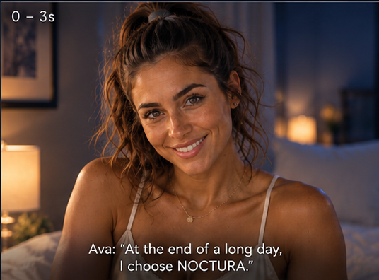
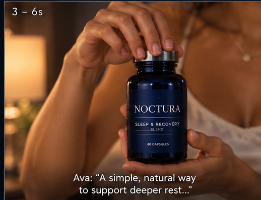
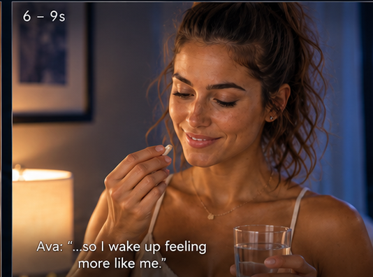
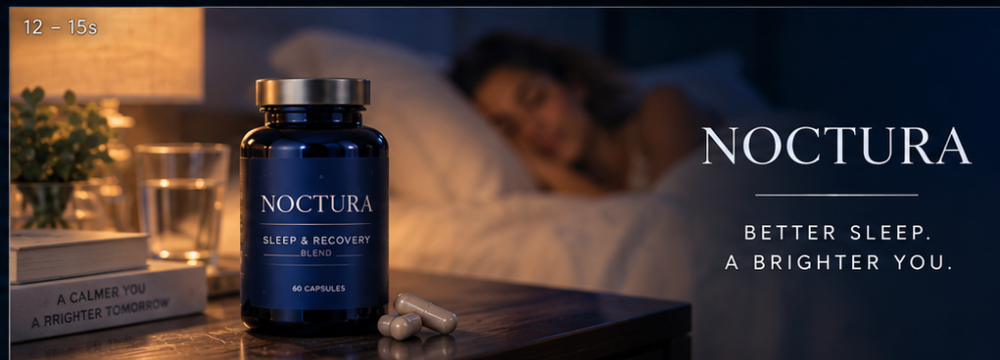

End the day with intention.
NOCTURA positions the product through Ava's own nighttime routine, keeping the tone intimate, premium and human.
Warm bedside light and cool moonlight create the visual contrast, while product handling gives the story a clear commercial anchor.
Calm ritual. Clear product story.
The five supporting references lock the Hero Ava look, product presentation, capsule interaction, sleep moment and final product hero.




Luxury, without the noise.
The campaign uses quiet confidence instead of clinical language, allowing the environment and Ava's delivery to carry the message.
Intimate spokesperson
Ava speaks directly to camera, making the nighttime choice feel personal.
Light as narrative
Warm lamp light and cool night ambience create a visual transition from day to rest.
Product precision
The bottle remains consistent and legible through the ritual and final hero frame.
Designed around continuity.
Creative workflow over unverified tool claims.
The case study records the visual and production approach. Exact model/tool attribution should be confirmed before publication rather than inferred from the finished commercial.
Turning a routine into a premium brand moment.
NOCTURA demonstrates how Hero Ava can carry a wellness story through direct address, product interaction, atmosphere and a strong final pack shot.
The format is adaptable to other nighttime, beauty and self-care campaigns.